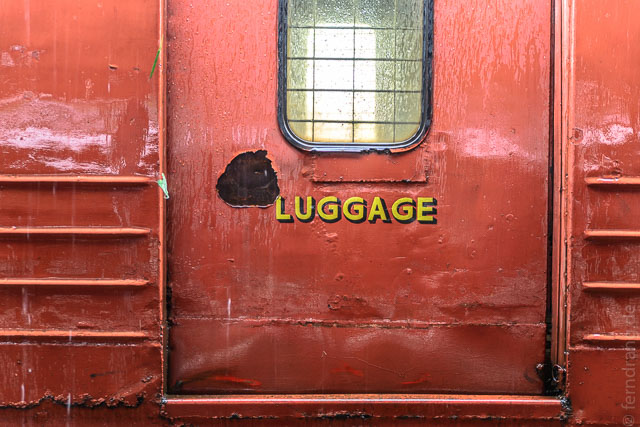
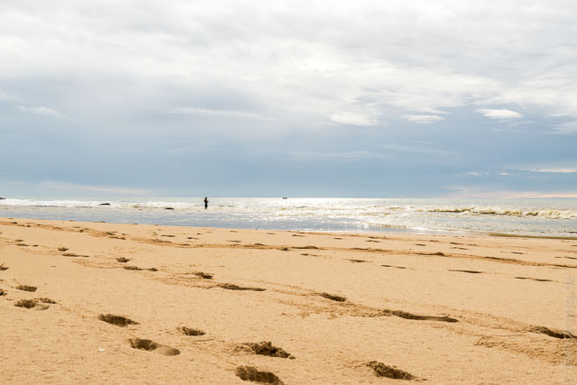
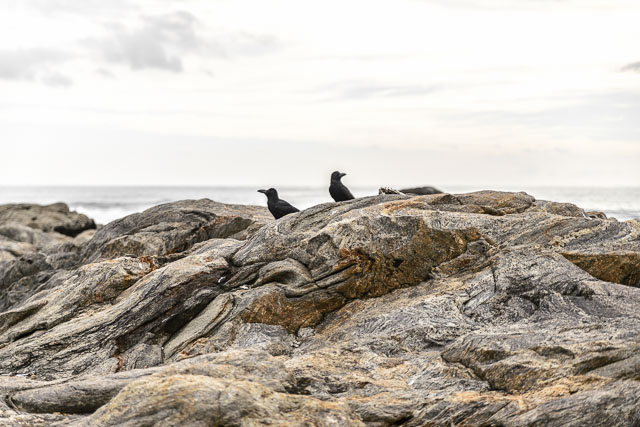

Nachdem sich die steile Straße zu unserem Guesthouse in einen knöcheltiefen Fluss verwandelt hatte, haben wir beschlossen zu fliehen. Kandy ist vor allem wegen den Ausflügen in die schöne Umgebung ein beliebtes Ziel – bei Dauerregen hat man nichts davon. Die Zugfahrt nach Colombo hatte schon extrem stressig begonnen, als die Menschen auf dem Bahnsteig in den noch fahrenden Zug gedrängt sind. Mit zwei riesigen Rucksäcken steckten wir mittendrin. Der Zug war aber vorher schon voll, so dass wir es nur zwei Fuß weit von der Tür weg geschafft haben.
Die Fahrt nach Colombo ging durch das malerische Hochland, das leider fast gänzlich in Wolken (und Regen) versunken war. In Colombo war der Bahnhof genauso stressig. Die Fahrt weiter bis Weligama mussten wir auch stehen, so dass wir es insgesamt auf stolze 7 Stunden Stehplatz geschafft haben.

Die Nacht in Mirissa hat sich als schwerer Fehler erwiesen (weil der nicht empfehlenswerte Stefan Lohse sich nicht klar ausdrücken kann). Das ist Kirmes am Strand und Party bis in den Morgen. "Ein Ort um die Seele baumeln zu lassen" war keine so gute Beschreibung von dieser Touri-Hölle.
Also weiter nach Tangalle. Die Busse sind wirklich super. Wir haben keine Minute am Straßenrand gestanden, bis einer angehalten hat, der uns für ungefähr 0 Cent nach Matara brachte. Von dort dauerte es eine weitere Stunde (Stehplatz natürlich) bis Tangalle.
Und dort haben wir endlich eine nette kleine Hütte an einem schönen, ruhigen Strand gefunden. Allerdings kann man dem Regen auf einer Insel nicht immer entfliehen, so dass wir hier einen weiteren, ganzen Tag unterdacht verbringen mussten.
Am nächsten Tag durften wir dann ein seltenes Wetterphänomen beobachten: Die Luft war klar und ohne Wassertropfen, blaue Löcher in der grauen Decke. Einheimische konnten es uns erklären: No rain! Endlich!
Damit konnten wir den Urlaub nach kurzer Pause fortsetzen. Der Strand von Tangalle ist breit und endlos. Das Meer ist erstaunlich kraftvoll und kann einen sogar in der knietiefen Brandung die Beine wegreißen. Das mindert die Badefreude aber nicht - bei dem starken Wellengang will man gar nicht mehr raus.

In unserer Unterkunft "Cinnabar Resort" haben wir endlich die erträumte einsame Strandhütte gefunden. Das Badezimmer ist um einen Baum herum gebaut worden und der Duschkopf steckt in einer Kokosnuss. Das Frühstück ist gigantisch, auch wenn man etwas Zeit mitbringen muss. Aber davon hat man am Meer ja immer genug.
Weil langsam auch hier die Hochsaison beginnt, konnten wir die schöne Unterkunft nicht verlängern. In einer etwas gehetzten Aktion haben wir alle schönen Plätze am Strand abgeklappert. Hinter einer Mangrovenlagune sind wir bei "Shiva's Beach Bungalows" fündig geworden. Die Hütten sind ganz neu und haben ein ziemlich gutes Feature: Ein Bett auf dem Balkon mit Blick unter Palmen auf den Strand. Abends wird das extrem kitschig, aber es lässt sich gut aushalten.